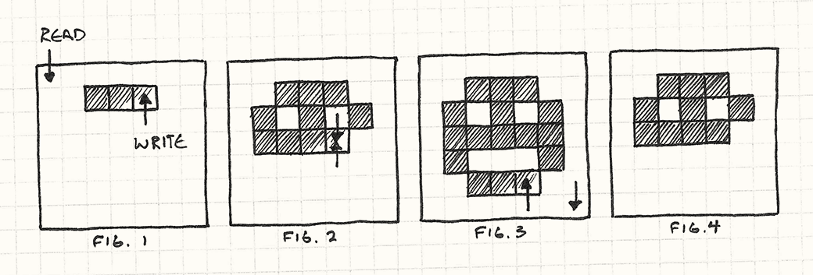
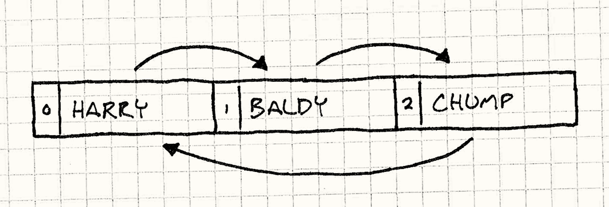
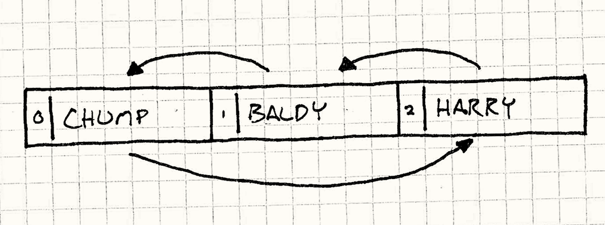

Double Buffer
Game Programming PatternsSequencing Patterns
Intent
Cause a series of sequential operations to appear instantaneous or simultaneous.
Motivation
In their hearts, computers are sequential beasts. Their power comes from being able to break down the largest tasks into tiny steps that can be performed one after another. Often, though, our users need to see things occur in a single instanteous step, or see multiple tasks performed simultaneously.
A typical example, and one that every game engine must address, is rendering. When the game draws the world the users see, it does so one piece at a time: the mountains in the distance, the rolling hills, the trees, each in its turn. If the user watched the view draw incrementally like that, the illusion of a coherent world would be shattered. The scene must update smoothly and quickly, displaying a series of complete frames, each appearing instantly.
The Double Buffer pattern will let us solve this problem, but first we’ll need to take an aside to talk about how a computer displays graphics.
How computer graphics work (briefly)
A video display like a computer monitor draws one pixel at a time. It sweeps across each row of pixels from left to right, and then moves down to the next row. When it reaches the bottom right corner, it scans back up to the top left and starts all over again. It does this so fast — around sixty times a second — that our eyes can’t see the scanning. To us, it’s a single static field of colored pixels, an image.
You can think of this process like a tiny hose that pipes pixels to the display. Individual colors go into the back of the hose, and it sprays them out across the display, one bit of color to each pixel in its turn. So how does the hose know what colors go where?
In most computers, the answer is that it pulls them from a framebuffer. A framebuffer is an array of pixels in memory, a chunk of RAM where each couple of bytes represents the color of a single pixel. As the hose sprays across the display, it reads in the color values from this array, one byte at a time.
In order to get our game to appear on screen, all we ultimately do is write to that array. All of the crazy advanced graphics algorithms we have eventually boil down to just that: setting byte values in the framebuffer. But there’s a little problem:
Earlier, I said computers are sequential. If it’s executing a chunk of our rendering code, we don’t expect it to be doing anything else at the same time. That’s mostly accurate, but a couple of things do happen in the middle of our program running. One of those is that the video display will be reading from the framebuffer constantly while our game runs. This can cause a problem for us.
Let’s say we want a big red circle to appear on screen. Our program starts looping through the framebuffer, setting pixels to red. What we don’t realize is that the video driver is pulling from the framebuffer right as we’re writing to it. As it scans across the pixels we’ve written, our circle starts to appear. But then it outpaces us and moves into pixels we haven’t gotten to yet. The result is tearing: a hideous visual bug where you see half of something drawn on screen.

This is why we need this pattern. Our program renders the pixels one at a time, but we need the display driver to see them all at once — one refresh the circle isn’t there, the next one it is. Double buffering solves this. I’ll explain how by analogy.
Act 1, Scene 1
Imagine our users are watching a play, produced by ourselves. As scene one ends and scene two starts, we need to change the stage setting. If we just have the stagehands run on after the scene and start dragging props around, the illusion of a coherent place will be broken. We could dim the lights while we do that (which of course, is what real theaters do), but the audience still knows something is going on then. We want there to be no gap in time between scenes.
So, with a bit of real estate we come up with this clever solution: We build two stages set up so the audience can see both. Each has its own set of lights. We’ll call them stage A and B. Scene one is shown on stage A. Meanwhile, stage B is dark and the stagehands are setting up scene two on it. As soon as scene one ends, we cut the lights on stage A, and bring them up on stage B. The audience looks to the new stage and scene two begins immediately.
At the same time, our stagehands are over on the now darkened stage A, striking scene one and setting up scene three. As soon as scene two ends, we switch the lights again back to stage A. We continue this process for the entire play, using the darkened stage as a work area where we can set up the next scene. Every scene transition, we just toggle the lights between the two stages. Our audience gets a continuous performance with no delay between scenes. They never see a stagehand.
Back to the graphics
That is exactly how double buffering works, and this process underlies the rendering system of just about every game you’ve ever seen. Instead of a single framebuffer, we have two. One of them represents the current frame. This one, stage A in our analogy, is the one the video hardware is reading from. It can scan through it as much as it wants whenever it wants.
Meanwhile, our rendering code is writing to the other buffer. This is our darkened stage B. When our rendering code is done drawing the scene, it switches the lights by swapping the buffers. This tells the video hardware to start reading from the second buffer now instead of the first one. As long as it times that switch at the end of a refresh, we won’t get any tearing, and the entire scene will appear all at once.
Meanwhile, the old framebuffer is now available for use. We start rendering the next frame onto it. Voilà!
The Pattern
A buffered class encapsulates a buffer: a piece of state that can be modified. This buffer is edited incrementally, but we want all outside code to see the edit as a single atomic change. To do this, the class keeps two instances of the buffer, a next buffer and a current buffer.
When information is read from a buffer, it is always from the current buffer. When information is written to a buffer, it occurs on the next buffer. When the changes are complete, a swap operation swaps the next and current buffers instantly so that the new buffer is now publicly visible. The old current buffer is now available to be reused as the new next buffer.
When to Use It
This pattern is one of those ones where you’ll know when you need it. If you have a system that lacks double buffering, it will probably look visibly wrong (tearing, etc.) or will behave incorrectly. But saying, "you’ll know when you need it" doesn’t give you much to go on. More specifically, this pattern is appropriate when these four things are true:
-
We have some state that is being modified incrementally.
-
That same state may be accessed in the middle of modification.
-
We want to prevent the code that’s accessing the state from seeing the work-in-progress.
-
We want to be able to read the state and we don’t want to have to wait while it’s being written.
Keep in Mind
Unlike larger architectural patterns, double buffering exists at a lower implementation level. Because of this, it has fewer consequences for the rest of the codebase — most of the game won’t even be aware of the difference. There are a couple of caveats, though.
The swap itself takes time
Double-buffering requires a swap step once the state is done being modified. That operation must be atomic — no code can access either state while they are being swapped. Often, the swap is as quick as assigning a pointer, but if it takes longer than it does to modify the state to begin with, then we haven’t helped ourselves at all.
We have to have two buffers
The other consequence of this pattern is memory usage. As its name implies, the pattern requires you to keep two copies of your state in memory at all times. On memory-constrained consoles, this can be a heavy price to pay. If you can’t afford two buffers, you may have to look into other ways to ensure your state isn’t being accessed during modification.
Sample Code
Now that we’ve got the theory, let’s see how it works in practice. We’ll write a very bare-bones graphics system that lets us draw pixels on a frame buffer. In most consoles and PCs, this low-level part of the graphics system is provided by the video driver, but this will let us see what’s going on. First up is the buffer itself:
class Framebuffer { public: Framebuffer() { clear(); } void clear() { for (int i = 0; i < WIDTH * HEIGHT; i++) { pixels_[i] = WHITE; } } void draw(int x, int y) { pixels_[(WIDTH * y) + x] = BLACK; } const char* getPixels() { return pixels_; } private: static const int WIDTH = 160; static const int HEIGHT = 120; char pixels_[WIDTH * HEIGHT]; };
It has basic operations for clearing the entire buffer to a default
color, and setting the color of an individual pixel. It also has a
function, getPixels(), to expose the raw array of memory holding the
pixel data. We won’t see this in the example, but the video driver
will be calling that function frequently to stream memory from the
buffer onto the screen.
We’ll wrap this raw buffer in a Scene class. It’s job here is to
render something by making a bunch of draw() calls on its buffer:
class Scene { public: void draw() { buffer_.clear(); buffer_.draw(1, 1); buffer_.draw(4, 1); buffer_.draw(1, 3); buffer_.draw(2, 4); buffer_.draw(3, 4); buffer_.draw(4, 3); } Framebuffer& getBuffer() { return buffer_; } private: Framebuffer buffer_; };
Every frame, the game tells the scene to draw. The scene clears the
buffer and then draws a bunch of pixels, one at a time. It also
provides access to the internal buffer through getBuffer() so that
the video driver can get to it.
This seems pretty straightforward, but if we leave it like this, we’ll
run into problems. The trouble is that the video driver can call
getPixels() on the buffer at any point in time, even here:
buffer_.draw(1, 1); buffer_.draw(4, 1); // <- Video driver reads pixels here! buffer_.draw(1, 3); buffer_.draw(2, 4); buffer_.draw(3, 4); buffer_.draw(4, 3);
When that happens, the user will see the eyes of the face, but the mouth will disappear for a single frame. The next frame, it could get interrupted at some other point. The end result is horribly flickering graphics and angry users.
We’ll fix this with double buffering:
class Scene { public: Scene() : current_(&buffers_[0]), next_(&buffers_[1]) {} void draw() { next_->clear(); next_->draw(1, 1); // ... next_->draw(4, 3); swap(); } Framebuffer& getBuffer() { return *current_; } private: void swap() { // Just switch the pointers. Framebuffer* temp = current_; current_ = next_; next_ = temp; } Framebuffer buffers_[2]; Framebuffer* current_; Framebuffer* next_; };
Now Scene has two buffers, stored in the buffers_ array. We don’t
directly reference them from the array. Instead, there are two
members, next_ and current_, that point into that array. When we
draw, we draw onto the next buffer, referenced by next_. When the
video driver needs to get at the pixels, it always accesses the
other buffer through current_.
This way, the video driver never sees the buffer that we’re working
on. The only remaining piece of the puzzle is the call to swap()
when the scene is done drawing the frame. That swaps the two buffers
by simply switching the next_ and current_ references. The next
time the video driver calls getBuffer() it will now get the new
buffer we just finished drawing and put our recently drawing buffer
onscreen. No more tearing or unsightly glitches.
Not just for graphics
The core problem that a Double Buffer solves is state being accessed while it’s being modified. There are two common causes of this. We’ve covered the first one with our graphics example: the state is directly accessed from code on another thread or interrupt.
There is another equally common cause, though: when the code doing the modification is accessing the same state that it’s modifying. This can manifest in a variety of places, especially physics and AI where you have entities interacting with each other. Double-buffering is often necessary here too.
Artificial unintelligence
Let’s say we’re building the behavioral system for, of all things, a game based on slapstick comedy. The game has a stage containing a bunch of actors that run around and get up to various hijinks and shenanigans. Here’s our base actor:
class Actor { public: Actor() : slapped_(false) {} virtual ~Actor() {} virtual void update() = 0; void reset() { slapped_ = false; } void slap() { slapped_ = true; } bool wasSlapped() { return slapped_; } private: bool slapped_; };
Every frame, the game is responsible for calling update() on it so
that it has a chance to do some processing. Critically, from the
user’s perspective, all actors should appear to update
simultaneously.
Actors can also interact with each other, if by "interacting", we mean
"they can slap each other around." When updating, the actor can call
slap() on another actor to slap it, and call wasSlapped() to determine if
it has been slapped.
The actors need a stage where they can interact, so let’s build that:
class Stage { public: void add(Actor* actor, int index) { actors_[index] = actor; } void update() { for (int i = 0; i < NUM_ACTORS; i++) { actors_[i]->update(); actors_[i]->reset(); } } private: static const int NUM_ACTORS = 3; Actor* actors_[NUM_ACTORS]; };
It lets us add actors, and provides a single update() call that will
update each actor. Even though actors will appear to move
simultaneously to the user, here they are updated one at a time.
The only other point to note is that each actor’s "slapped" state is cleared immediately after updating. This is so that an actor only responds to a given slap once.
Now, to get things going, let’s define a concrete actor subclass. Our comedian here is pretty simple. He faces a single actor. Whenever he gets slapped — by anyone — he responds by slapping the actor he faces.
class Comedian : public Actor { public: void face(Actor* actor) { facing_ = actor; } virtual void update() { if (wasSlapped()) facing_->slap(); } private: Actor* facing_; };
Now lets throw some comedians on a stage and see what happens. We’ll set up three comedians, each facing the next. The last one will face the first, in a big circle:
Stage stage; Comedian* harry = new Comedian(); Comedian* baldy = new Comedian(); Comedian* chump = new Comedian(); harry->face(baldy); baldy->face(chump); chump->face(harry); stage.add(harry, 0); stage.add(baldy, 1); stage.add(chump, 2);
The resulting stage is set up a bit like the following image shows. The arrows show who is facing who, and the numbers show their index in the stage’s array:

Now, let’s slap Harry to get things going and see what happens when we start processing:
harry->slap(); stage.update();
Remember that the update() function in Stage updates each actor in
turn, so if we step through the code, we’ll find that the following
occurs:
Stage updates actor 0 (Harry) Harry was slapped, so he slaps Baldy Stage updates actor 1 (Baldy) Baldy was slapped, so he slaps Chump Stage updates actor 2 (Chump) Chump was slapped, so he slaps Harry Stage update ends
So, in a single frame, our initial slap on Harry has propogated through all of the comedians. Now let’s mix things up a bit. Lets say we reorder the comedians within the stages array, but leaving them still facing each other the same way.

We’ll leave the rest of the stage setup alone, but replace the chunk of code where we add the actors to the stage with this:
stage.add(harry, 2); stage.add(baldy, 1); stage.add(chump, 0);
We’ll run our experiment again and let’s see what happens:
Stage updates actor 0 (Chump) Chump was not slapped, so he does nothing Stage updates actor 1 (Baldy) Baldy was not slapped, so he does nothing Stage updates actor 2 (Harry) Harry was slapped, so he slaps Baldy Stage update ends
Uh, oh. Totally different. The problem is straightforward. When we update the actors, we modify their "slapped" states, the exact same state we also read during the update. Because of this, changes to that state early in the update affect later parts of that same update step.
The ultimate result is that an actor may respond to being slapped on either the same frame as the slap or the next frame, based entirely on how the two actors happen to be ordered on the stage. This violates our requirement that actors need to appear to run in parallel: the order that they update within a single frame shouldn’t matter.
Buffered slaps
Fortunately, our Double Buffer pattern can help. This time, instead of having two copies of a monolithic "buffer" object, we’ll be buffering at a much finer granularity: each actor’s "slapped" state:
class Actor { public: Actor() : currentSlapped_(false) {} virtual ~Actor() {} virtual void update() = 0; void swap() { // Swap the buffer. currentSlapped_ = nextSlapped_; // Clear the new "next" buffer. nextSlapped_ = false; } void slap() { nextSlapped_ = true; } bool wasSlapped() { return currentSlapped_; } private: bool currentSlapped_; bool nextSlapped_; };
Instead of a single slapped_ state, each actor now has two. Just
like the previous graphics example, the current state is used for
reading, and the next state is used for writing.
The reset() function has been replaced with swap(). Now, right
before clearing the swap state, it copies the next state into the
current one, making it the new current state. This also requires a
small change in Stage:
class Stage { void update() { for (int i = 0; i < NUM_ACTORS; i++) { actors_[i]->update(); } for (int i = 0; i < NUM_ACTORS; i++) { actors_[i]->swap(); } } // Previous Stage code... };
The update() function now updates all of the actors and then swaps
all of their states.
The end result of this is that an actor will only see a slap on the frame after it was actually slapped. This way, no matter what order they appear in the stage’s array, they will behave the same. Updating the actors happens simultaneously as far as the user or any outside code can tell.
Design Decisions
The Double Buffer pattern is pretty straightforward, and the examples we’ve seen so far cover most of the variations you’re likely to encounter. There are two main decisions that come up when implementing it.
How are the buffers swapped?
The swap operation is the most critical step of the process since we must lock out all reading and modification of both buffers while it’s occurring. To get the best performance, we want this to happen as quickly as possible.
-
Swap pointers or references to the buffer:
This is how our graphics example works, and is the most common solution for double-buffering graphics.
-
It’s fast. Regardless of how big the buffer is, the swap is simply a couple of pointer assignments. It’s hard to beat that for speed and simplicity.
-
Prevents outside code from storing persistent pointer to buffer. This is the main limitation. Since we don’t actually move the data, what we’re essentially doing is periodically telling the rest of the codebase to look somewhere else for the buffer, like in our original stage analogy. This means that the rest of the codebase can’t store pointers directly to data within the buffer: they may be pointing at the wrong one a moment later.
This can be particularly troublesome on a system where the video driver expects the framebuffer to always be at a fixed location in memory. In that case, we won’t be able to use this option.
-
Existing data on the buffer will be from two frames ago, not the last frame. Successive frames are drawn on alternating buffers, with no data copied between them, like so:
Frame 1 drawn on buffer A Frame 2 drawn on buffer B Frame 3 drawn on buffer A ...
You’ll note that when we go to draw the third frame, the data already on the buffer is from frame one, not the more recent second frame. In most cases, this isn’t an issue — we usually just clear the whole buffer right before drawing. But, if we intend to reuse some of the existing data on the buffer, it’s important to take into account that that data will be a frame older than we might expect.
-
-
Copy the data between the buffers.
If we can’t just repoint users to the other buffer, the only other option is to actually copy the data from the next frame to the current frame. This is how our slapstick comedians work. In that case, we chose this way because the state — a single boolean flag — doesn’t take any longer to copy than a pointer to the buffer would.
-
Data on the next buffer is only a single frame old. This is the nice thing about copying the data as opposed to ping-ponging back and forth between the two buffers. If we need access to previous buffer data, this will give us more up-to-date data to work with.
-
Swapping can take more time. This, of course, is the big negative point. Our swap operation now means copying the entire buffer in memory. If the buffer is large, like an entire framebuffer, it can a signficant chunk of time to do this. Since nothing can read or write to either buffer while this is happening, that’s a big limitation.
-
What is the granularity of the buffer?
The other question is how the buffer itself is organized: as a single monolithic chunk of data, or distributed among a collection of objects. Our graphics example uses the former, and the actors use the latter.
Most of the time, the nature of what you’re buffering will lead to the answer, but there’s some flexibility. For example, our actors could have all stored their messages in a single message block that they all reference into by their index.
-
If the buffer is monolithic:
Swapping is simpler. Since there is only one pair of buffers, a single swap does it. If you can swap by changing pointers, then you can swap the entire buffer, regardless of size, with just a couple of assignments.
-
If many objects have a piece of data:
-
Swapping is slower. In order to swap, we need to iterate through the entire collection of objects, telling each one to swap.
In our comedian example, that was OK since we needed to clear the next slap state anyway — every piece of buffered state needed to be touched each frame. If we don’t need to otherwise touch the old buffer, there’s a simple optimization we can do to get the same performance of a monolithic buffer while distributing the buffer across multiple objects.
The idea is to get the "current" and "next" pointer concept and apply it to each of our objects by turning them into object-relative offsets. Like so:
class Actor { public: static void init() { current_ = 0; } static void swap() { current_ = next(); } protected: void slap() { slapped_[next()] = true; } bool wasSlapped() { return slapped_[current_]; } private: static int current_; static int next() { return 1 - current_; } bool slapped_[2]; };
Actors access their current slap state by using
current_to index into the state array. The next state is always the other index in the array, so we can calculate that withnext(). Swapping the state just alternates thecurrent_index. The clever bit is thatswap()is now a static function: it only needs to be called once, and every actor’s state will be swapped.
-
See Also
You can find this pattern in use in almost every graphics API out there. OpenGL has
swapBuffers(). Microsoft’s XNA framework swaps the framebuffers within itsendDraw()function.